Hi ! I am Mahir Shahrier
- Civil & Environmental Engineer
- Water-Air-Waste-Energy Nexus Researcher
- Earth Systems and Climate Resilience Professional
- Environmetal Management Practitioner
- Environmental Data and Policy Analyst
From Particles in the Air to Patterns on the Ground, I aim to Advance Earth System Resilience to Build Eco-smart and Climate-Resilient Solutions with Data, Empathy, and Science.

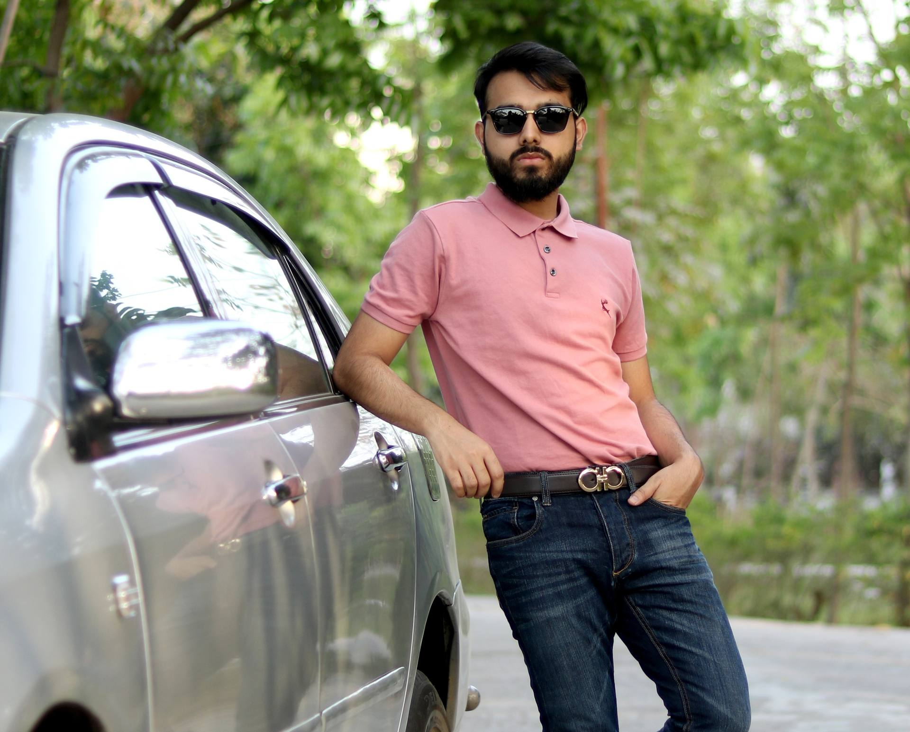
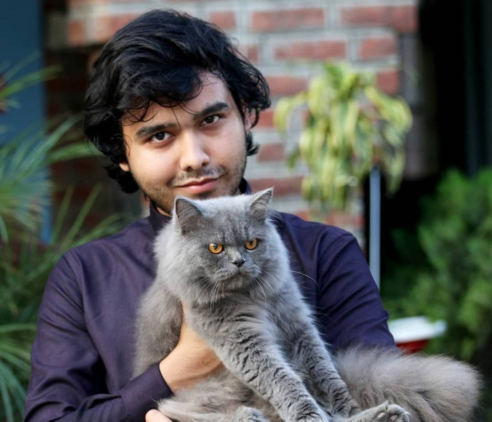
• Climate risk assessment and Climate Data Platform (CDP) development for Uganda's Agricultural Insurance Scheme (UAIS) under UNDP FRA Initiative.
• Stakeholder engagement with MoFPED, IRA, Bank of Uganda, and AIC; AI-driven analytics to inform insurance scheme design.
• Technical reporting and data interpretation for climate and agricultural risk management.
• Developing a multi-dimensional urban decentralization framework for Dhaka using satellite data (1994-2024) and HMIS records.
• Primary data collection: 1,000-respondent surveys, 30 KIIs, and 30 FGDs.
• Dissemination via peer-reviewed publications, national seminars, and government policy briefs.
• Coordinated thalassemia and NCD screening for 600 students; supervised field staff and junior researchers.
• Managed project design, logistics, and coordination with IUB Medical Centre for diagnostics and referrals.
• Developed survey instruments, managed data, and produced technical reports.
• Built an ensemble ML + SHAP framework for Water Quality Index prediction and pollution source apportionment in the Turag River.
• Simulated intervention scenarios to support evidence-based river management policy.
• Prepared manuscripts for peer-reviewed publication.
• Strategic leadership in defining research vision, goals, and priorities.
• Grant proposal development, data interpretation, and technical report writing.
• Application of AI-driven predictive analytics for research insights.
• Development and implementation of innovative tools and methodologies.
• Collaboration with academic institutions and researchers worldwide.
• Dissemination of findings through peer-reviewed publications, conferences, and stakeholder engagement.
• Ensuring ethical compliance, data quality, and research integrity.
• Supervision and mentorship of junior researchers, interns, and students.
• Research design and technological gap analysis.
• AI-driven predictive analytics, data analysis, and report writing.
• Laboratory testing of water/wastewater.
• Field visits for conducting KII, FGD, questionnaires, and data collection.
• Training program planning, designing, and facilitating.
• “Emergency Multi-Sector Rohingya Crisis Response Project (EMCRP): Gap Analysis for Identifying Contextualized Technological Solutions and Developing Effective ESMP for Improved FSM and SWM Systems”, assisted by DPHE.
• “Improvement of WASH and waste management in the HCFS (6 District Hospitals and 10 Upazila Health Complex) using WASHFIT”, assisted by UNICEF.
• Data collection, data cleansing and management, data analysis.
• AI-driven predictive analytics.
• Preparing draft reports, editing, and reviewing reports.
• Field visits for conducting KII, FGD, questionnaires, and data collection.
• Providing methodological and technical support in data acquisition.
• GIS-based analysis and mapping.

Awarded Dinajpur Board Scholarship by the Government of Bangladesh for excellence in Higher Secondary Certificate (HSC) examination in General Grade, providing full tuition fee waiver for Bachelor's degree with approximately $350 total stipend for the period 2017-2022.
-Awarded Dinajpur Board Scholarship by the Government of Bangladesh for excellence in Secondary School Certificate (SSC) examination in General Grade, providing full tuition fee waiver for Bachelor's degree with approximately $70 monthly stipend for the period 2015-2016.

I was class representative of the Civil'16 series of the Department of Civil Engineering, RUET. I served one year as a class representative. For my excellent performance, I was awarded the Class Representative Award

Extensive worldwide research collaboration experience working with datasets from 4 countries and collaborating with scholars from 11 nations across diverse research projects. Actively seeking and welcoming new international collaborative opportunities for future research endeavors.

Experienced peer reviewer for reputed international journals, evaluating manuscript quality, methodology rigor, data analysis accuracy, and scientific contribution. Provided constructive feedback to authors while maintaining publication standards and advancing scientific knowledge dissemination.

Onuronon-Cultural Club of RUET works as a potential platform by engaging students in various cultural and co-curricular activities. Active club member performing mime, reciting poems, and volunteering. Attended grooming sessions and workshops, participated as club representative, oversaw activity preparation, and facilitated student information about seminars, competitions, and collaborative campus-professional relations.

GRA (Greater Rangpur Association) is a nonprofit organization which gives many welfare services to the students of Rajshahi University of Engineering and technology (RUET) by connecting all the current students & ex-students who come from Rangpur district. As a General Secretary I carried out or delegates all the administrative duties that enable the Association and its members to function effectively. I was associated with the association for 3 years.

I served as a rover scout for Cantonment Public School and College for 2 years (2014-2016). The purpose of Scouting is to encourage the physical, intellectual, social, emotional and spiritual development of young people so that they take a constructive place in society as responsible citizens, and as members of their local, national and international communities


Why Water-Air-Waste-Energy Nexus research is a Key to a Sustainable Future..?
Environmental systems - water, air, waste, and energy - are deeply interconnected, yet we often treat them in isolation. Nexus research changes this by developing integrated solutions that address multiple challenges at once, like turning waste into energy while cleaning water and air. Real-world examples include refugee camps generating power from wastewater and smart cities using AI to manage resources efficiently. As climate change intensifies, this approach offers scalable, resilient solutions that bridge science and policy for global sustainability.
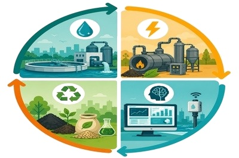
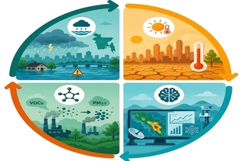
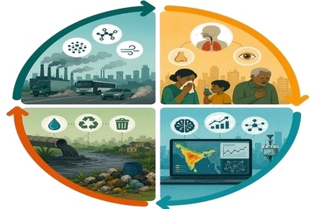
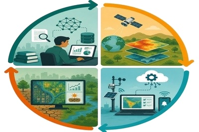
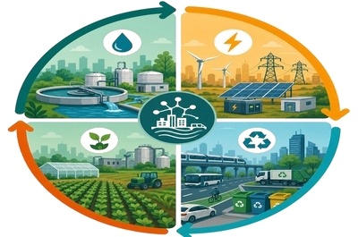
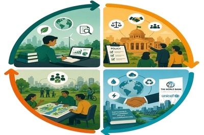
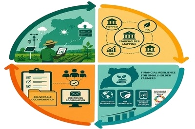
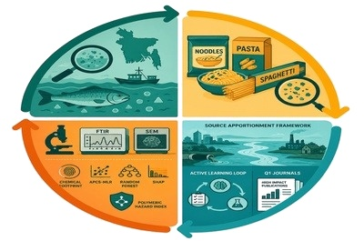

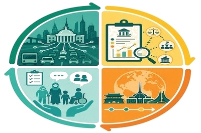
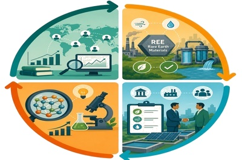
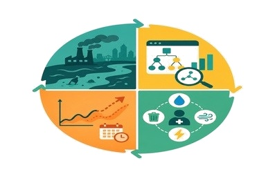
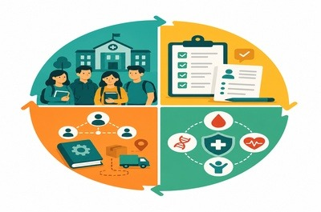
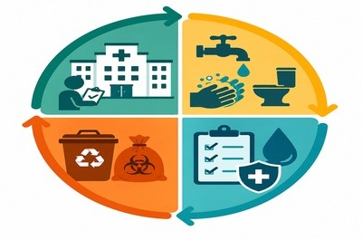
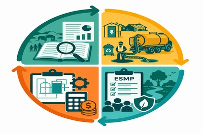
Publications and citations serve as visible measures of a researcher's success. However, I believe a researcher's true achievement lies in their hard work, persistence, and dedication to contributing something positive to the world. The main goal should be making the world a better place for all living beings. This means creating a harmonious relationship between material things and living creatures. Most importantly, such work must be conducted with integrity and ethics. These values matter more than any publication count or citation index, because they reflect genuine commitment to improving life on Earth.


A 43-slide investigation into Bangladesh's air pollution crisis — covering emission inventories, seasonal PM₂.₅ and NO₂ dynamics, and evidence-based mitigation strategies across industrial, vehicular, and biomass burning sources. Proposes integrated governance frameworks aligned with WHO air quality guidelines.

A 38-slide analysis of policy entrepreneurship mechanisms driving climate adaptation governance — examining institutional innovation, multi-level stakeholder coalitions, and case-based frameworks from developed and developing nations with implications for Bangladesh's climate resilience strategy.

A 35-slide strategic review of flood disaster patterns in Bangladesh from 2020–2025 — assessing damage scales, infrastructure failures, early warning systems, and community-level resilience interventions. Proposes a forward-looking national flood management framework integrating Geo-AI and climate projections.

A 39-slide critical examination of SDG implementation gaps — comparing global commitments against ground realities in Bangladesh across SDG 3 (Health), SDG 6 (Clean Water), SDG 13 (Climate Action), and SDG 15 (Life on Land). Highlights governance, financing, and data monitoring deficits.

A 37-slide exploration of Bangladesh's biomass energy landscape — analysing agricultural residue, industrial waste-to-energy pathways, and renewable energy scalability. Evaluates technical, economic, and policy barriers to mainstreaming biomass in the national energy mix toward a low-carbon future.

A 31-slide diagnosis of Bangladesh's water pollution crisis — covering industrial effluents, agricultural runoff, microplastic contamination, and arsenic groundwater intrusion. Proposes multi-stakeholder governance reforms and technology-driven monitoring solutions for sustainable water resource management.

A 41-slide case study audit of ISO 14001:2015 Environmental Management System implementation at Walton Hi-Tech Industries — evaluating EMS documentation, environmental aspects register, compliance obligations, operational controls, and continual improvement performance across manufacturing operations in Bangladesh.

A 27-slide foundational presentation on engineering economics — covering cost-benefit analysis, time value of money, depreciation methods, break-even analysis, and project evaluation techniques. Developed during B.Sc. Civil Engineering studies at RUET.

This study examined water source conditions in Talaimari Slum Area through field surveys and questionnaires. Water security crisis: 80% face inadequate supply, 60% consider water unsafe with foul smells and particles. Only 37% treat water. Risk assessment shows "fatal" score requiring urgent intervention.

This study analyzed road safety infrastructure on a 4-kilometer segment of Dhaka-Rajshahi Highway (N6) near Rajshahi universities using ViDA software and 53 variables. Road safety star ratings reveal pedestrians most vulnerable (65.61% unsafe segments), followed by bicyclists and motorcyclists. Infrastructure scored poorly with 2-1 star ratings. 46.34% segments show high injury risk requiring priority safety investments.

This presentation covers Engineering Economics fundamentals for civil engineering applications. Engineering economics applies economic principles to help managers optimize decisions by minimizing costs and maximizing revenue. It involves seven core principles, cost analysis concepts, and capital investment decisions, exemplified by Bangladesh's major bridge projects.
SUSTAIN Lab (Smart Urban Systems for Technological Advancements and Innovative Networks) is a pioneering research initiative and consultancy founded by Civil Engineering graduates from RUET, Bangladesh. Specializing in the water-air-waste-energy nexus, we develop climate-resilient infrastructure solutions through interdisciplinary collaboration, AI-driven analytics, and comprehensive testing. Our mission emphasizes inclusive research opportunities for underrepresented students while addressing environmental challenges for vulnerable populations globally.

A curated collection of books, journals, reports, and videos I find valuable for research and learning in environmental science.
Science only matters if it reaches people. Here is where findings on atmospheric chemistry, urban water systems, and planetary health leave the journal page — and enter the conversation through conference talks, interviews, and community-driven research engagement.

Individual video entries will appear here as content is added.
I am always eager to connect with fellow researchers, academics, industry professionals, and environmental enthusiasts for meaningful research collaboration or knowledge sharing opportunities.

The Phoenix who ignited my ambitions. My professional North Star, mentor and place of faith. The most respected figure in my professional journey, whose guidance and unwavering support has shaped my career trajectory. From his eternal flame of knowledge and dedication, my professional spirit was born, rising toward heights once thought impossible.

The Architect of my Research DNA…. father figure of my professional life…! This is the person who introduced me to research and provided the solid foundation I stand on today.

My inspiration & Creative Catalyst. My best research buddy whose collaborative spirit and innovative thinking continuously inspire my academic and professional growth.

RUET's precious Gift to me… Golden Standard of Excellence...! My most beloved mentor at RUET, embodying hard work, dedication, and balanced personality that I deeply admire and emulate.

Distance-Defying Support System and Guardian Angel since 2017. RUET's most precious gift to me, always by my side despite 5500 km distance, providing constant intellectual and emotional support.

A fine Game Developer. The brilliant mind behind this magnificent website, whose technical expertise and creativity deserve my heartfelt gratitude and appreciation.

My Excellence Push Button. The person who constantly inspires me to strive for excellence and be the very best version of myself.

My Life's Sacred Trinity. The cornerstone of my existence, for whom I fight back every obstacle and who made me who I am today.

My Unwavering Support Angel. My sister and the only person who provides unwavering support during my lowest moments, believing in me unconditionally.